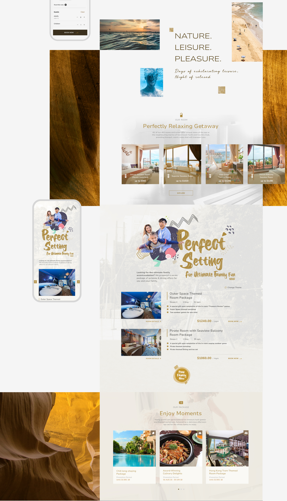
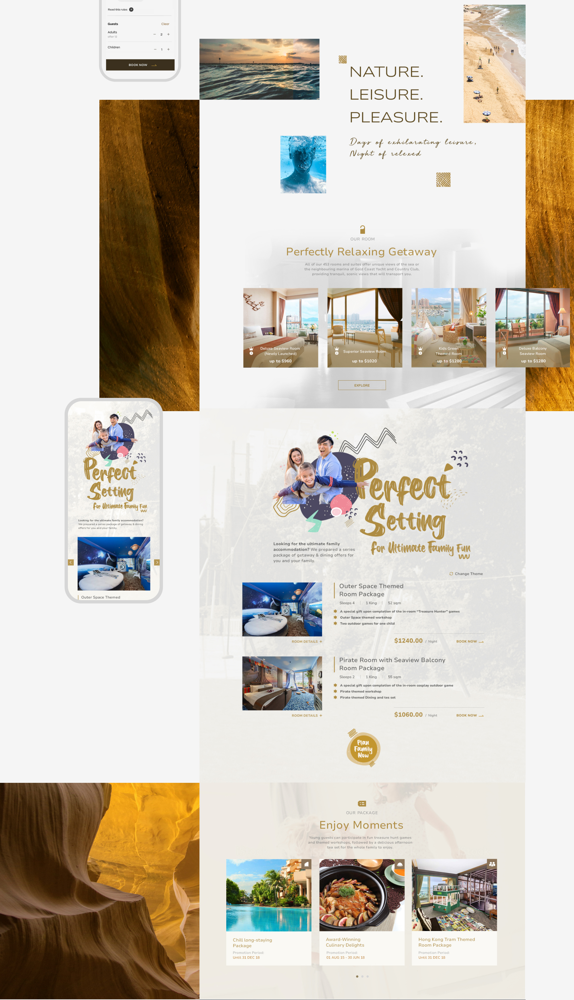
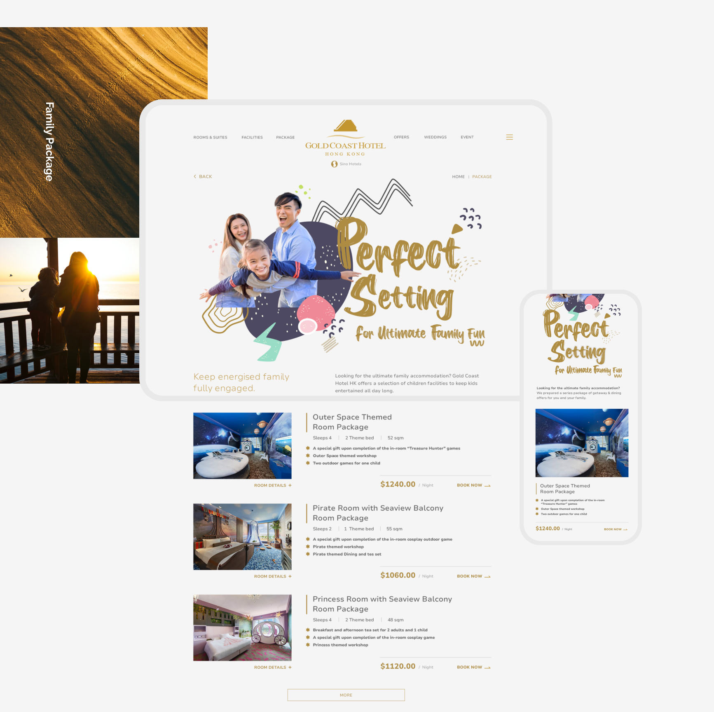
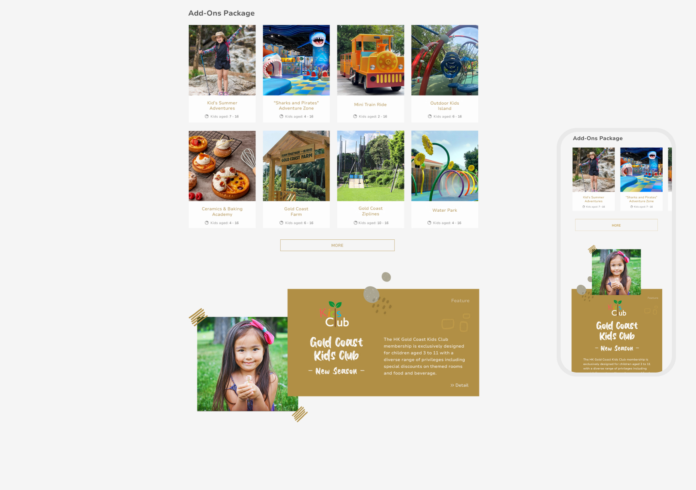
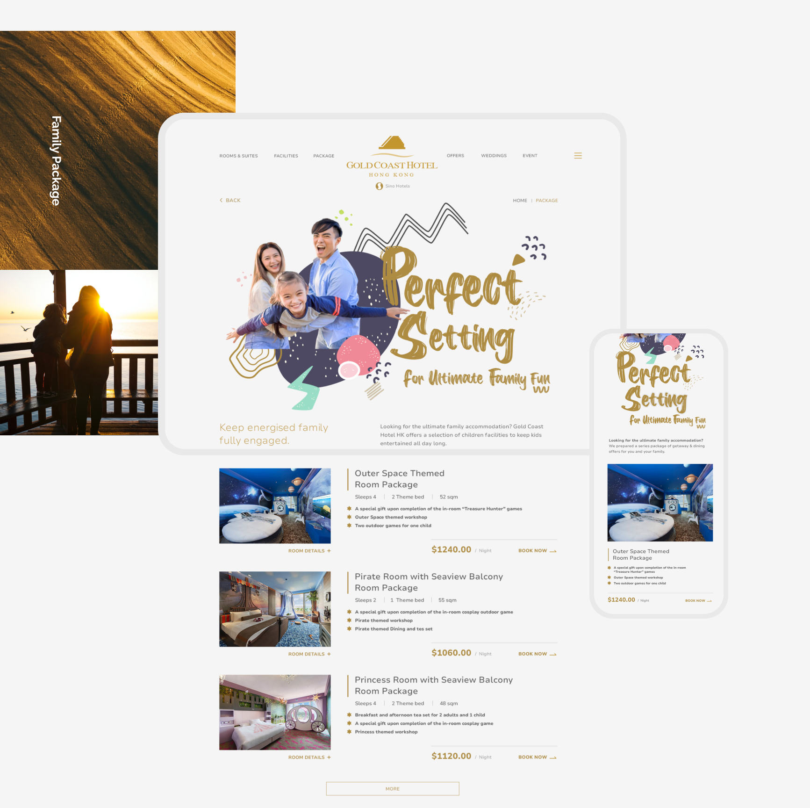
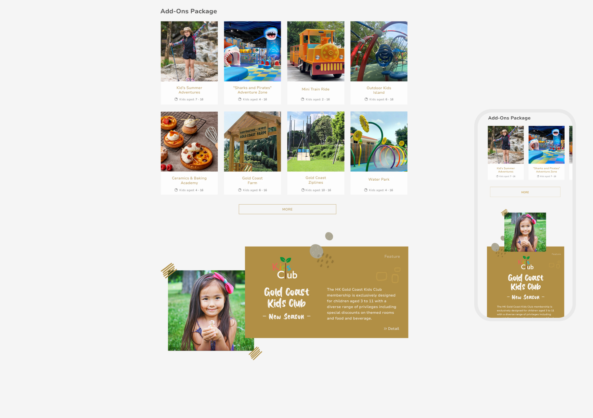
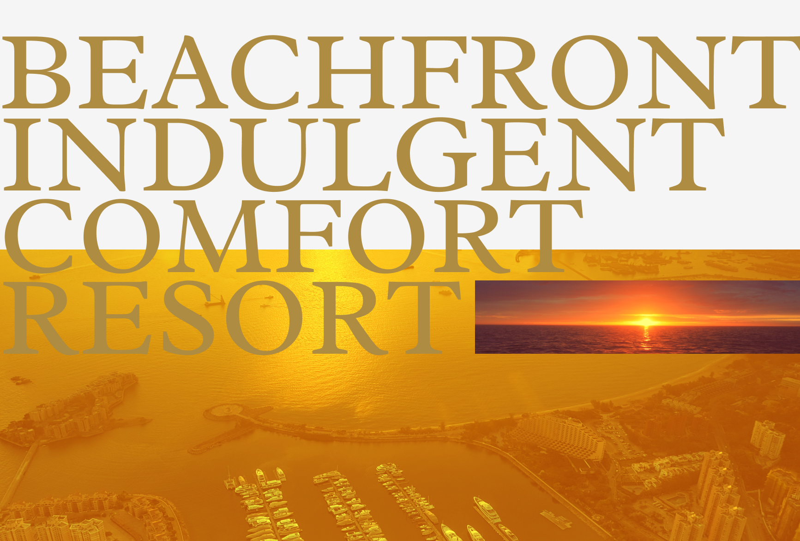
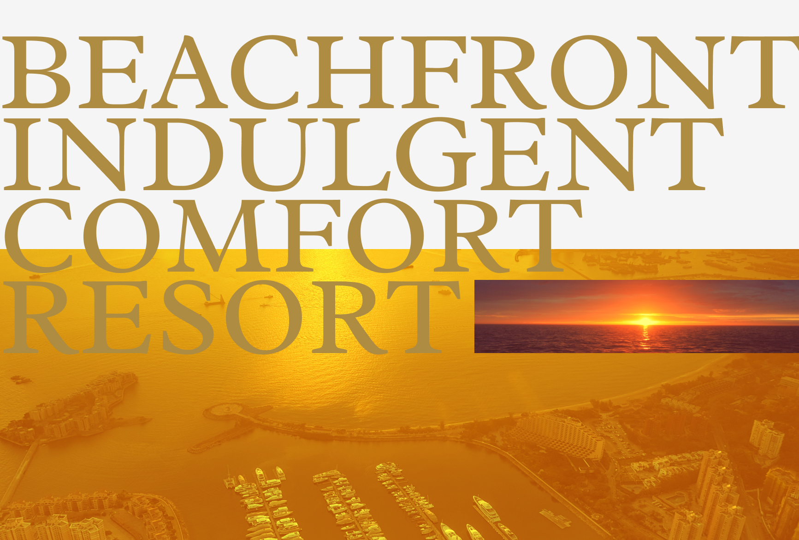

Design Context
The Project
About Hotel
Gold Coast Hong Kong sit on Tuen Mun Coast celebrated coast. Exclusively private seaview and a resort-like ambience. The hotel with 453 hotel guest rooms and suites, including 10 kid-themed rooms and superb panoramic marina sea views. The hotel promises days of exhilarating leisure and night of relexed, indulgent comfort. The hotels attracting local holiday-goers and international, as well as friendly neighbourhood communities attracted to the outdoors, sun, sand and combination of great facilities and activities designed with kids.
Client Objectives
- Increase family booking rate and wide-range services for family trip
- Opportunities to boost business sales and new touchpoints
- Better align brand value with demand
Target Audience
The primary target audience segment was focused on local familys in the age group of 25–50, who fancy a break from their home for the weekend that make this a particularly good family staycation option.
Although there was no UX role involved in the team for deeply research and audit. We strived to pin point the right approach, and set out to solve it to achieved the desired solution.
Defining what's Design Framework
What's Design Challenge
SINO Hotel Group wanted to further increase occupancy rates, especially for family groups. They decided to improve the website booking process. We explored the user journey in the hotel booking process and revamped the entire process, structure, and design.
As a corporation that existed for decades, we needed to be careful to create authentic brand experiences that reinforce its group objectives for existing customers. The main focus was on promote brand loyalty by pleasing the hotel experience for guests.
Design Strategy
We identify the design objectives and considerations based on the data provided by the client. These will be our focus when planning the design strategy for the project after brainstorming with my team.
Designed to convey the brand image of SINO Hotel Group. To improve the booking experience based on the hotels' best-selling products and family packages that allow thier customers to maximize the use of website.
The Hotel tagline, “Nature. Leisure. Pleasure” that comes directly from SINO group hotel, it needs to communicate with its target audience in an approachable way. Through SINO brand principles and constraints, we created a visual language to enhance their form of hotel communication.
polyline
Booking
Process
Develop a understandable interface where the user can booking action in a couple clicks that inspire more family group to booking further to stay hotel
Offer Add-ons service options that enrich their trip experience while booking a hotel room and boost services sales
draw
Design
Maintain a consistent of client branding language throughout the design
Reinforce the selling point of its extensive children’s facilities and array of activities and attractions
Ideating the Design Approach
Discover
The core process was booking. First step is to know more about the current hotel what area to improve, We needed to get an overview of how user book rooms on hotel sites. As I had no specialist knowledge of hotel booking processes, I run usability tests for a deeper look at the best patterns of the booking journey thorough research to several hotels. Driven to create simplicity booking proccess that helped users with an task.
Booking Flow
We conducted the feature consideration that touch point to balance design goals with target user needs. In order to specify the actions users would be able to perform and start sketching the user flows.
Proposed Add-ons Services Task Flow
We understand that hotels also provide a wide-range services for family trip other than just selling rooms. We also have to include not only the users booking experience, but also the hotel business.
The most important challenge in adding this feature is finding the right spot. Because the feature is just subsidiary and not mandatory. We need to put it on the phase where the user feels the most comfortable with not too annoying but still serve its initial purpose: to sell. We grouping these services into three add-ons groups: Meals, Room Complements and Activities.
This shows the necessary continuous interaction of the user from the initial operation to the completion of the booking with add-ons services:
After brainstorming potential project risks with the team. We decided to put the phase after the user chooses the room and before the payment process. Since this step is not mandatory, users can opt to not click it and go straight to the payment process.
tips_and_updatesINSIGHTS :
"As abandoned add-on bookings are very common in the process, it is important to limit this as much as possible. This follows naturally from the user's intuition of what the service needs to be."
Sketches out Booking Concept
Once we have the client content in place. We can organize it to make initial concept and separate the different areas of information nicely to improve visual clarity to communciate with the team. It's important to figure out the client's brand identity before we start designing to make sure we're not compromised or limited in our design.
Defining the Design Direction
Visual Element
One of my goal was to create a cozy atmosphere while conveying a visual vibrant of a page layout should match to hotel's objectives.
Color Scheme - Derives directly either form the SINO Group that align visual consistency and a strong brand identity. The Citronne gold of the logo that expresses the hotels core value, while the different of saturations gold color adds balance into the entire design.
Typefaces - Derived from the styleguide also, and upon the SINO group design system. We considered all possible visual and textual information about hotel rooms. Highlight whatever content should grasp customer’s attention by different weight text and saturations of grey color.
Icons - Necessary elements of the hotel industry or the entity itself, helping to quickly and better understand its various services and message.


Grid System
I created an scalable grid framework that is concise and clear, with a hierarchy of information that can be used for future expansion.
Implementating the Key Solution
Booking Process
Redesign the booking interaction where divided into three steps with process bar illustrate which step the user is in. This give the processes a more visually layout which reducing the effort needed to complete booking. Users need just the right amount of information to make that booking and rid of any clunky with users, so users would naturally follow their instinct make it smoothly.
play_circle_filledClick on prototype to Play/Paused demo


Add-ons Services sub-step
We created pop-up sub steps so that the user is not disturbed in the selection or reading process. Users can add the quantity of the add-ons that you would like to buy, plus adding notes or special request to it. Then, if users want to know more about it, you can simply click on the the images or "About" button, to see the detail.
play_circle_filledClick on prototype to Play/Paused demo
Capturing Family Audience
The purpose of most users visiting the site is to book family packages and its facilities, therefore, as family packages have a high priority. We designed a dedicated page with key visual to fully attract families to book which showcases popular family packages immediately navigate the potential guest through to booking.
play_circle_filledClick on prototype to Play/Paused demo
Concise Landing improve accessibility
Created rapid search bar is mainly catered for accommodation when the guest landing. Any prospective guest who is exploring a hotel website will want to rapid know if there is availability during their travel dates for them to stay there.
Beside, Entire design are clearly laid out and provide a balance of hotel information and visual, but are still informative and feel vibrant. Time is precious and a user is not going to enjoy excessively scrolling for hotel information.
Full screen menu able to users up to speed with information quickly before they start booking. The menu opens across the entire screen, providing enough information without looking cluttered.
Final Design Screen
After several iterations and improvements, these are the some final look for website. These screens here are what the final product should look like after being developed and coded.
Takeaways
It is important to ask for information from stakeholders, and details that we might not know. Prioritization of information is really important, both from a client and a business point of view.
We encountered a few design constrains from the angle of hotel business. This experiences reinforced communication with large enterprise and how to strategic booking detail from the my team rather than client technical team.


 


 



 

{kind=link}
{kind=link}